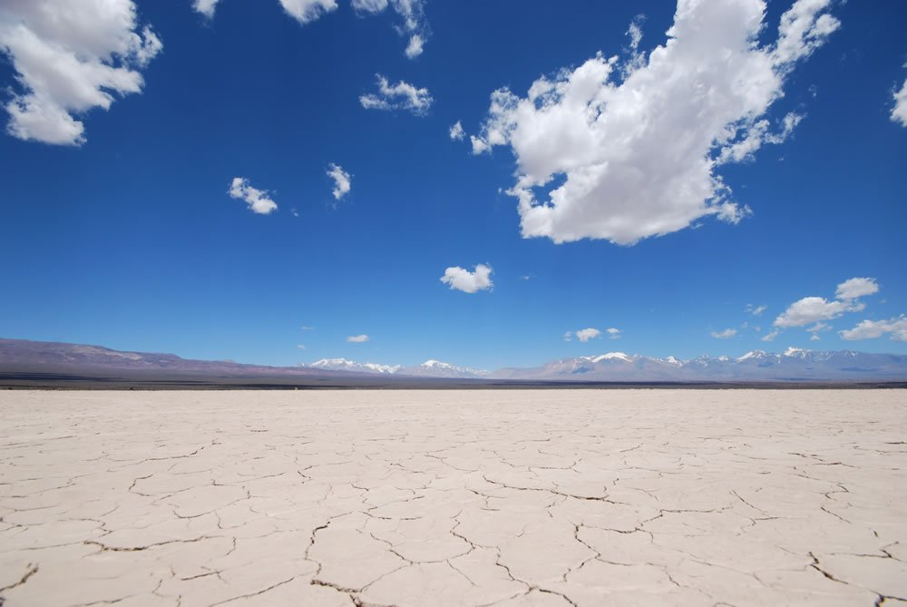
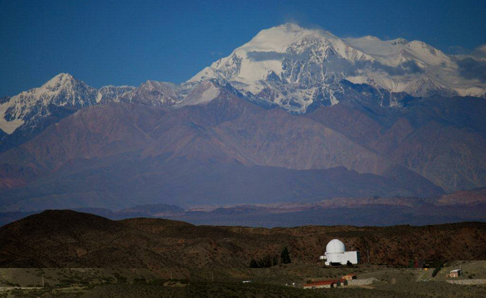
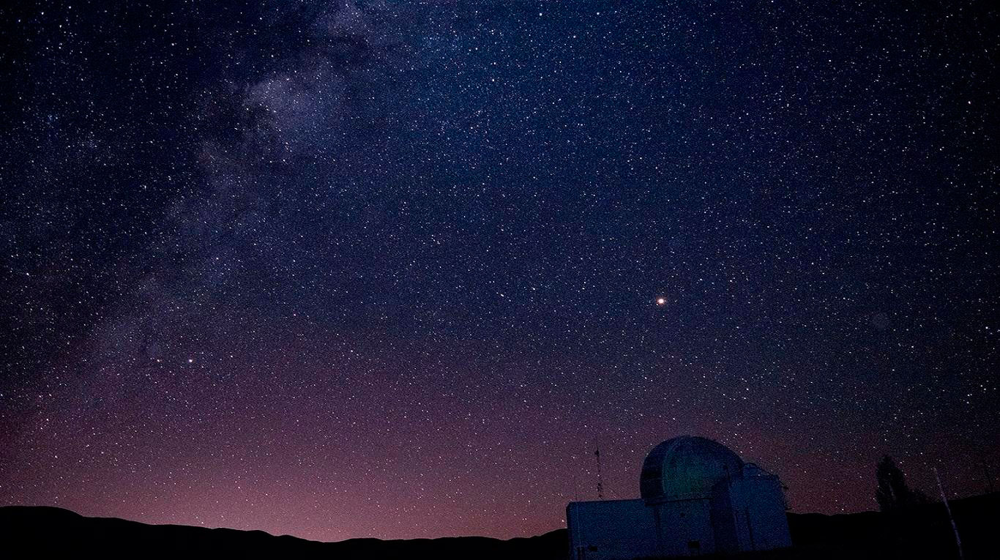

CASLEO
El Complejo Astronómico El Leoncito es un observatorio astronómico ubicado en el departamento Calingasta, al oeste de la provincia de San Juan, casi al pie de la cordillera de los Andes, Argentina.

Barreal
La Pampa del Leoncito ó Barreal Blanco, es una extensión de 14 kms. de arcilla blanca, conocida internacionalmente por el deporte de Carrovelismo es el lugar por naturaleza de la publicidad de Malboro. Tambien es muy importante destacarlo en la información sobre Barreal para este mismo tipo de turistas.

Flora y Fauna
Un entorno mágico se genera en San Juan, provincia de Argentina que se caracteriza como un encantador y fértil oasis rodeado de cordones montañosos. Y más especialmente aún en el Parque Nacional El Leoncito: aquí suelen presentarse 300 noches al año con un cielo totalmente despejado.

El cielo
Condiciones astronómicas que son un verdadero lujo y que valen la pena para describir como una auténtica ventana argentina al cosmos.
Esto mismo le valió a la provincia de San Juan para ser considerada a nivel nacional y a partir de una ley sancionada en el Congreso, como Capital Nacional de Turismo Astronómico.